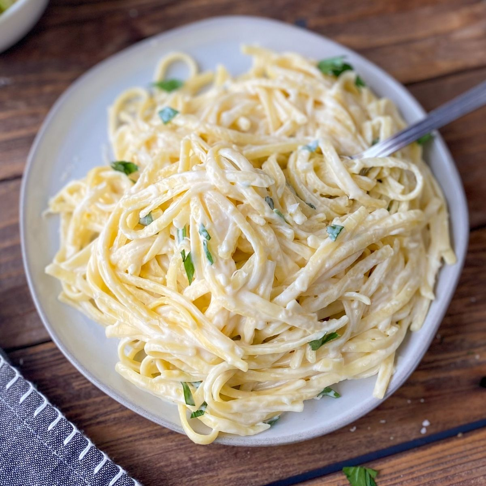

HOME
ALFREDO

I experimented with Alfredo sauce until I found a quick, cheap, and easy Alfredo sauce combination—the secret ingredient is butter!
Make this easy Alfredo sauce from scratch with butter, milk, and Parmesan. Home cooks love how the butter gives the sauce a rich, smooth texture.
INGRIDIENTS
- 1 small onion
- 5 cloves of garlic
- 1 cup of ham
- 1 can of mushrooms
- 1 cup of cream
- 2 cups of milk
- 1 chicken bouillon cube
- 1 tablespoon of butter
STEPS
- Heat oil in a medium, nonstick saucepan over medium heat
- Saute onions and garlic. Add ham and mushrooms, sauteing again
- Add cream and milk, stir, and bring to a boil
- Add pepper to taste